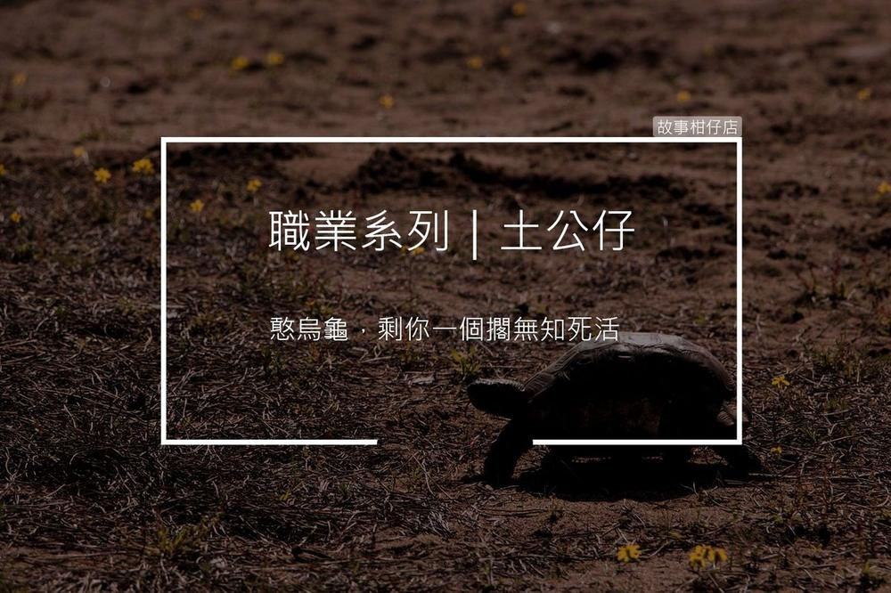

土公仔

過去專辦喪葬事宜的人，像收屍、撿骨、抬棺者都被統稱為「土公仔」，負責向家屬傳達喪葬習俗以及協助進行治喪作業，包括清洗大體、聯絡棺木、師公等等。
往昔殯葬業尚未企業化，每當村莊有人往生，土公仔就必須立刻前往處理，有些土公仔習慣工作結束後喝米酒消毒。
〈土公仔〉
「夭壽，有夠臭。」
門才撬開了個小縫，忠仔不理會身後村長的嘀咕，逕自走進屋內。
破瓦厝內瀰漫著死老鼠般的臭味，兩張木椅靠牆倚著，茶几擺著未走完的棋盤，餐桌上一鍋被碰倒的稀飯，老人整張臉栽進醬瓜碟，爬滿黑斑的手還硬挺挺捧著飯碗。
「無知死多久了，」村長捂著口鼻，「一個人無依無靠，可憐啦！」
同款啦。有某有子，到頭來，攏嘛是一個人。
忠仔拆了房間那張薄木板單人床，與村長將老人合力抬到板上。
仁至義盡的村長一溜煙跑出屋外透氣，只留忠仔跪在木板旁，為老人褪下髒污衣衫。
遺體已然僵硬，備好的衣褲怎麼也穿不上，忠仔心中默念道，「老先生，你身軀愛放乎軟，讓我替你換新衫，乎你一路好走。」
說也奇怪，原本硬邦邦的遺體如同融化的冰棒般軟化下來，忠仔拾起毛巾為他淨身，一枚厚實的金戒指鬆鬆套在老人枯瘦指間。
做土公仔十幾年，什麼金銀珠寶沒看過，上回還在另個遺體肛門發現藏了個翡翠，忠仔從未揣進口袋，是行規，也是個人原則。
葬儀社前來抬走蓋上白布的遺體，忠仔翻箱倒櫃找出一瓶米酒，先斟了一小杯喝下，再全數灑到客廳地板，開始彎腰拖地。
辛辣酒氣稍稍蓋過了異臭，沉默的空氣只剩下忠仔勞動的喘息，突然聽見背後傳來喀拉喀拉聲響，原來是角落魚缸裡，一隻小烏龜正活潑地撥弄著石頭。
憨烏龜，剩你一個擱無知死活。
清理好客廳，忠仔踏出門，邁開的腳步又停下來，點了根菸，思索著自己房間還清得出個位置吧？抓抓頭，他又返身進屋抱起魚缸。
第一次，忠仔起了貪念。
每個黃昏的魔幻時刻，
故事柑仔店，邀您一同
聽聽他們的聲音。